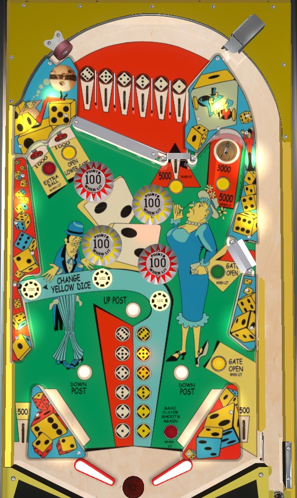

If playing strictly for points, the only thing that really matters on the playfield is the upper right saucer, which scores 3,000 points when not lit or 5,000 when lit; nothing else compares as far as score is concerned. Other playfield features depend on the total of two dice: pick a white die value with your top lane plunge, and rotate the yellow die value with mushroom bumpers. A total of 4 lights extra ball; 6 opens the upper right gate; 8 lights a target to open the lower right gate; 7 or 11 increase the value of the upper right saucer or the exit from the top lanes.
Scoring features on Little Joe depend on the values of two in-game dice; one is white, and one is yellow. The value of the white die is determined by which top lane the ball goes through on the opening plunge; this can only be changed mid-ball if one of the right gates is used to allow a replunge. The yellow die is set to a predetermined value at the start of each ball, but can be changed mid-ball by hitting any of the three yellow mushroom bumpers across the middle of the playfield, which also score 100 points each.
If the white and yellow dice total...
If the dice total is one of the special numbers (4, 6, 7, 8, 11) as the ball exits the top lane area, you'll be given the corresponding number's bonus for free. For example, if you plunge the 2 top lane and the yellow 2 was already given to you, your total is 4, and you will instantly be given the extra ball as soon as the pinball leaves the top lanes area. The same is true for 8 (the right out lane gate will instantly be opened) and 7/11 (you get an instant 5,000 points). Otherwise, leaving the top lanes area just scores 500 points.
If you get a replunge by using either of the two right gates, the white die you get on the replunge replaces whichever value was lit when the ball re-entered the shooter lane.
Plunging into the 1 or 6 top lane lights the yellow pop bumpers. Plunging into the 2 or 5 top lane lights the red pop bumpers. Plunging into the 3 or 4 lane lights all pop bumpers. Bumpers score 10 points or 100 when lit.
There are no in lanes. Flippers back up directly to the slingshots. Full-size 3 inch flippers are used. Slingshots score 10 points. Out lanes score 500 points.
There is a gate in the right out lane that redirects the ball back to the shooter lane for a replunge. It is opened by hitting the lit upper left standup target when the two dice total 8, or if the ball leaves the top lanes area with a dice total of 8. The gate stays open until it is used or the ball ends.
There is a center post between the flippers that completely blocks off the center drain as a reward. It is raised by the Up Post button just below the bumpers, and lowered by the two Down Post buttons near the slingshots.
There is no end of ball bonus. Maximum 1 extra ball per ball in play. I am not aware of a setting that assigns a point value to extra balls.